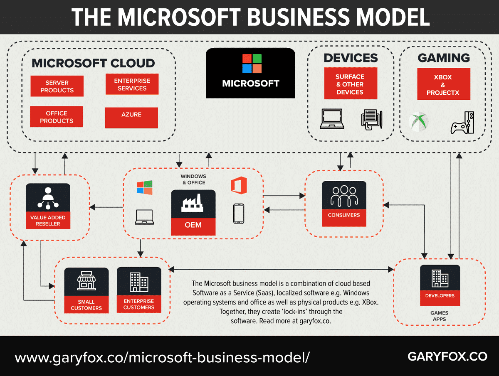

User-supported business model
Examples of types of business model


there are venture-supported startups, bank-sponsored companies, investors-backed firms, SPAC-fueled corporations, and user-supported business models.
The last one is better and can be fan-supported meaning the business is supported by fans giving donations, customer-supported because they are eager to buy and always happy to buy again, user-supported because they like to use it and it provides them real value.
the Patreon user expects from the platform a fan-supported business model. The Quickstarter user expects from the platform a fan-backed project. The Crowdfunding platform user expects a crowd-funded startup.
There are a lot of people talking about Books and writing about books but I rarely read funded book, Book Fund, writer funding, author funding with this simple insight I decided to interest myself in funding books and making them not only useful for readers but also successful for authors and it happens that everybody could read and write the data-driven genre of books that Dojo Publish and everybody can use the book-driven platforms that Book Dojo build and run but we are almost sure that everybody will not because Book Dojo is a mail-only startup and we are almost sure that everybody is not reading emails or mail letters, every body Is not giving their email addresses for books, everybody is not using email at once but Book Dojo chooses to be specic, to be peculiar like Like Microsoft, Like Apple, Like Nestscape, Like Yahoo, Like Google, Like amazon, Like Nike, heard some bad rumors about Basecamp, if they are proved , it is sure that Book Dojo is not like Basecamp even if we like ruby and rails as language that we still don't use.
A reader-supported medium model of publication is simply what you are doing now. It helps the writer to know what you want to read we are guessing successfully with data-driven systems and algorithms but human insight is always better that’s why I am writing now instead of using an algorithmic writer using words like this algorithmic trader who I am also using numbers and words also.
Because the Book reader expects ideas-worth doing and talking Book Dojo publish refined data-driven print-only visually creative books for the book community.
Book Dojo, Gamestop Anatomy of a stock short Bubble, and before the Gamestop book which is already almost ready to print started an amazing may-be free data-driven book about blogging.
Thank all of you who love reading blogs and books because you give me the force to keep doing it because you deserve it.
PS: Not a link at all because I decided to write an interesting analysis about links and decided to not put links in this article. If you want the links relative to Book Dojo, the Books, and platforms, read my past articles.